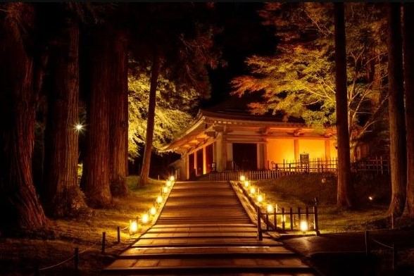
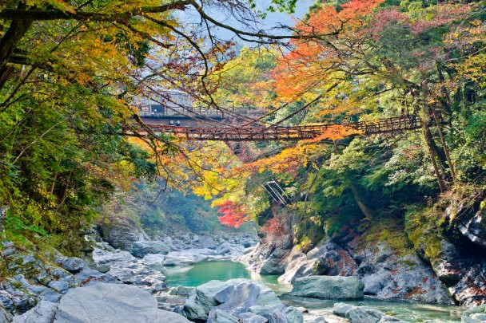
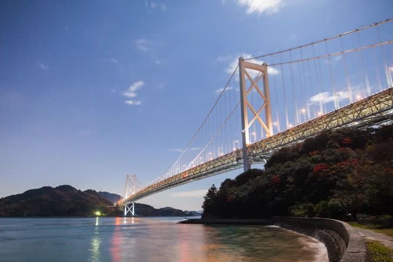

Tohoku Region
Tohoku, located in the northern part of Honshu, is often overlooked by travelers but is rich in natural beauty and cultural experiences.
- Culture:
- Tohoku is renowned for its traditional crafts, such as Kokeshi dolls and intricate lacquerware, showcasing the region's artistic heritage.
- The Aomori Nebuta Matsuri is a famous festival featuring vibrant floats and lively parades, celebrating local culture and community spirit.
- History:
- Tohoku was home to powerful samurai clans, with sites like Hirosaki Castle reflecting its feudal past.
- The region played a key role in the Boshin War (1868-1869), which was pivotal in the transition from the Tokugawa shogunate to the Meiji Restoration.

Location: Chuson-ji Temple, Kakunodate, Oirase Stream and Lake Towada
- Getting There:
- Fly into Sendai Airport, the main access point for Tohoku.
- Shinkansen (bullet train) services connect major cities like Tokyo to Sendai.
- Local trains and buses are available for travel within the region.
- Climate:
- Varied climate with cold winters and warm summers.
- Average winter temperatures can drop below 0°C (32°F).
- Best time to visit for cherry blossoms is in spring (April) and for fall foliage in autumn (October to November).
Shikoku Island
Shikoku is Japan's smallest main island, known for its pilgrimage routes and tranquil landscapes.
- Culture:
- The 88 Temple Pilgrimage is a renowned spiritual journey that connects 88 temples, offering deep cultural insights and a chance for reflection.
- Shikoku is famous for its local cuisine, including Sanuki udon, a thick and chewy noodle dish that is a must-try for visitors.
- History:
- Shikoku has a rich history tied to Buddhism, with many temples dating back to the Heian period (794-1185).
- The island was also significant during the Genpei War (1180-1185), which shaped the course of Japanese history.

Location: 88 Temple Pilgrimage, Iya Valley, Matsuyama
- Getting There:
- Fly into Takamatsu Airport or Matsuyama Airport.
- Shinkansen services connect to Takamatsu and Matsuyama.
- Local buses and ferries are available for island hopping.
- Climate:
- Temperate climate with hot summers and mild winters.
- Average summer temperatures can reach 30°C (86°F).
- Best time to visit is during spring (March to May) and autumn (September to November).
Onomichi
Located in Hiroshima Prefecture, Onomichi is a charming port town known for its scenic views and cycling routes.
- Culture:
- The Shimanami Kaido is a famous cycling route that connects Honshu and Shikoku, offering breathtaking views of the Seto Inland Sea.
- Onomichi's Temple Walk features a picturesque path lined with historic temples and shrines, reflecting the town's rich cultural heritage.
- History:
- Onomichi has a storied past as a port town, playing a significant role in maritime trade during the Edo period (1603-1868).
- The town is also known for its connection to famous Japanese authors, including the writer Sōseki Natsume, who drew inspiration from its landscapes.

Location: Shimanami Kaido, Temple Walk, Local Cuisine
- Getting There:
- Fly into Hiroshima Airport and take a train to Onomichi.
- Shinkansen services connect Hiroshima to Onomichi.
- Local ferries are available for nearby islands.
- Climate:
- Humid subtropical climate with hot summers and mild winters.
- Average summer temperatures can reach 30°C (86°F).
- Best time to visit is during spring (March to May) and autumn (September to November).